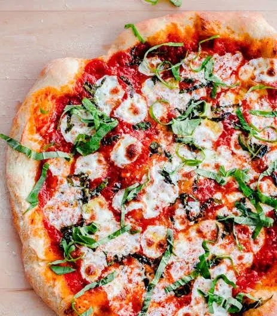

Margherita Pizza Recipe
Home
Description

A Margherita Pizza is a classic Italian favorite, featuring a soft and chewy crust topped with fresh tomato sauce, creamy mozzarella cheese, and fragrant basil leaves. It’s simple, fresh, and flavorful, perfect for enjoying a traditional pizza experience at home.
Ingredients
- Pizza dough (homemade or store-bought)
- Tomato sauce
- Fresh mozzarella cheese
- Fresh basil leaves
- Olive oil
- Salt
Steps
- Preheat your oven and prepare the pizza dough.
- Spread tomato sauce evenly over the dough.
- Add slices of fresh mozzarella cheese.
- Bake until the crust is golden and the cheese is melted.
- Remove from the oven and top with fresh basil leaves and a drizzle of olive oil.
- Slice and serve hot.